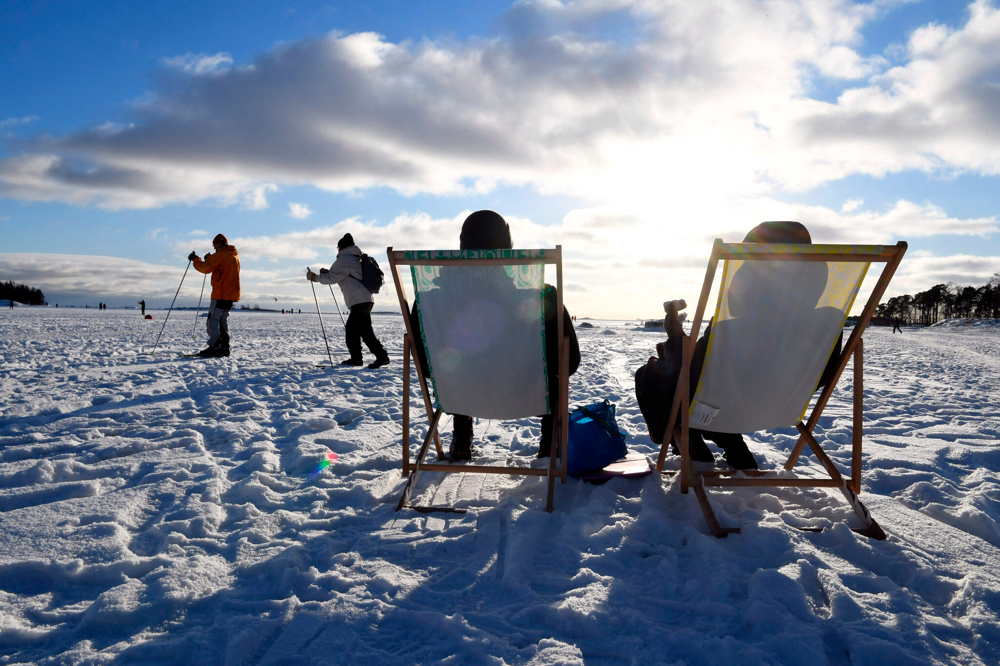
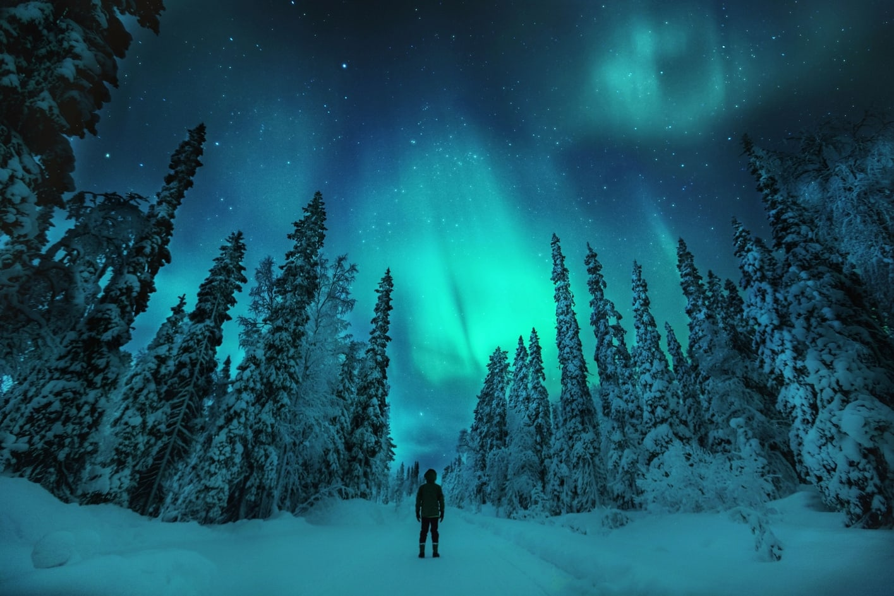

Finland
Welcome to Finland, a captivating fusion of modernity and untouched nature. Helsinki's vibrant streets and serene lakeside villages set the stage for a unique blend of cultural richness, where the enchanting rhythm of Finland's music scene, echoing the works of renowned composers like Sibelius and contemporary artists, adds a melodic layer to the experience. As the northern lights illuminate the Arctic sky, Finland's cinematic brilliance comes to life through the works of acclaimed director Aki Kaurismäki, offering a visual feast that complements the country's rich cultural tapestry. Welcome to a land where the magic of nature, harmonies of music, and cinematic artistry converge for an unforgettable journey.
Finland's culture is deeply rooted in a harmonious blend of modernity and traditions, creating a unique societal fabric that fosters happiness and well-being. The Finnish people take pride in their strong sense of community, equality, and appreciation for nature. The culture places a high value on education, innovation, and a healthy work-life balance. The concept of "sisu," embodying resilience and determination, permeates the national ethos. Finland's commitment to social welfare, excellent healthcare, and a robust education system contributes to a high standard of living. The world's happiest country title is not only a result of tangible factors like economic stability but also stems from intangible elements, such as the emphasis on trust, social connections, and a supportive societal framework that prioritizes the overall happiness and fulfillment of its citizens.
Top 10 Tourist Sights
- Helsinki Cathedral (Helsingin tuomiokirkko)
- Suomenlinna Fortress
- Porvoo Old Town
- Rovaniemi
- Nuuksio National Park
- Ekenäs Archipelago
- Alvar Aalto Architecture
- Lake Saimaa
- Northern Lights in Lapland
- Helsinki Market Square (Kauppatori） 
From exploring World Heritage sites to witnessing the magical dance of the northern lights, Finland beckons with the enchantment of a Nordic country！